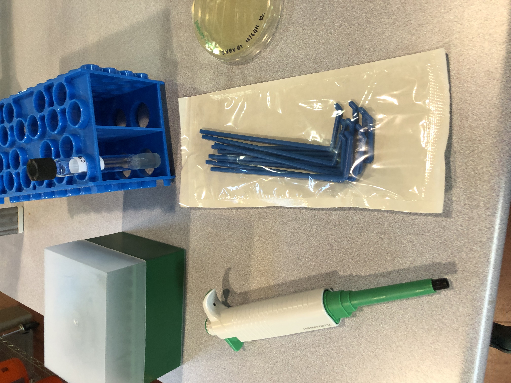
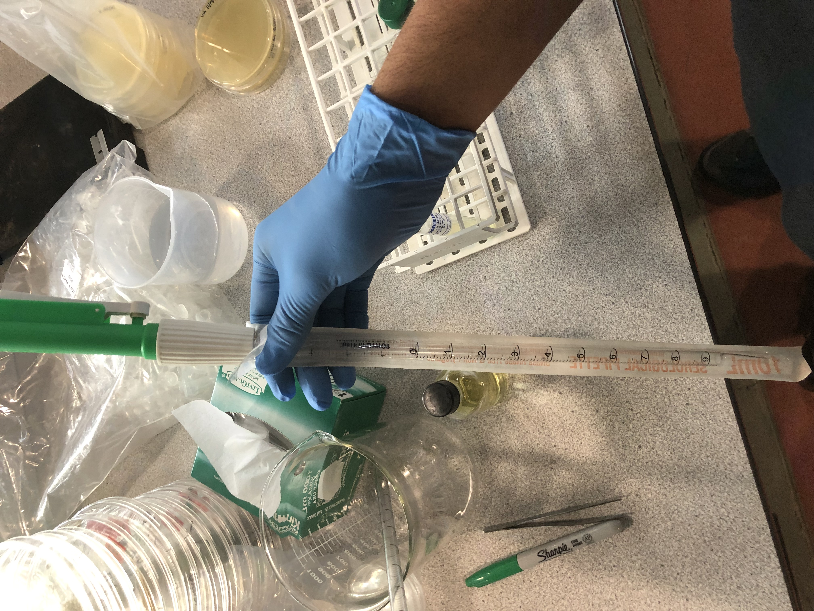
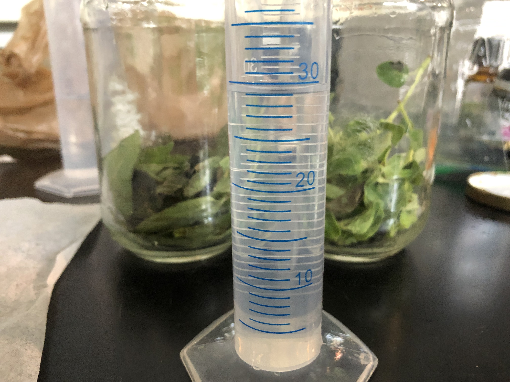
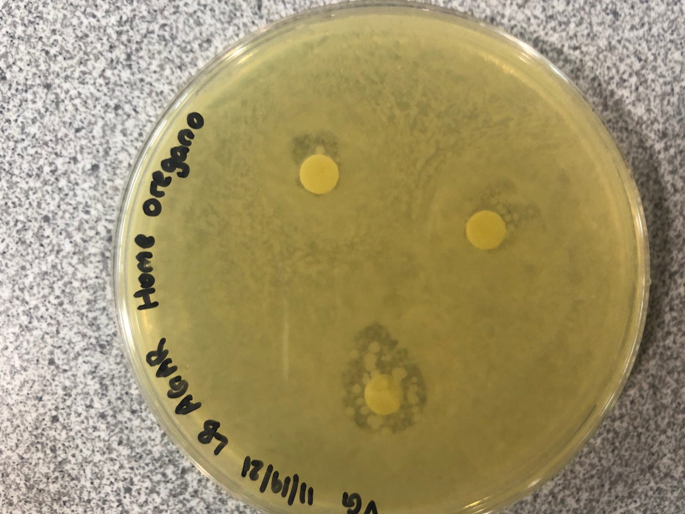

Author
Procedure
Results

1. Creation of the Extracts
To make the oregano and coneflower extract, clean and dry leaves from an oregano and coneflower plants were taken.
They were then placed into the mason jar.
Parchment paper was placed in between the lid and the jar to prevent rust.
The jar was sealed and placed in a cool, dark place for 8 weeks while being shaken once every day.
After the 8 weeks were completed, the extracts were strained with strainers and cheesecloth
2. Preparation of Petri Dishes and Bacteria
The 8 plastic Petri dishes in this experiment(one for each cleaning agent and one for the positive control)were coated with Agar to grow the bacteria.
To make this, the solid Agar was brought to room temperature and poured into each Petri dish.
The bacterial concentration was brought to room temperature.
100 microliters were placed into each Petri dish through a micropipette.
Using an L-spreader, the bacteria was spread evenly across the Petri dish such that it covered the entire surface.
The Petri dishes were placed in the insulator overnight and left upside down to prevent condensation from occurring.


3. Application of Cleaning Agent
Soap, water, Vinegar, Homemade and pre-made extracts, and Ethanol were used
100 microliters of each condition were placed onto three antibiotic disc and left overnight.
The discs for each condition were placed equidistant from each other on their respective Petri dish
The Petri dishes were left untouched for 24 hours
The data collection process was continued for two more days.
4. Collection of Data
Once the Petri dishes were left for their specified amount of time, the data was collected.
To do this, the diameters of the zones where all the bacteria were killed were recorded
This process was repeated for all three discs of each condition at each respective time.
The average diameter of the zone for each of the conditions was taken to determine which conditions were the most effective at killing Bacteria.
